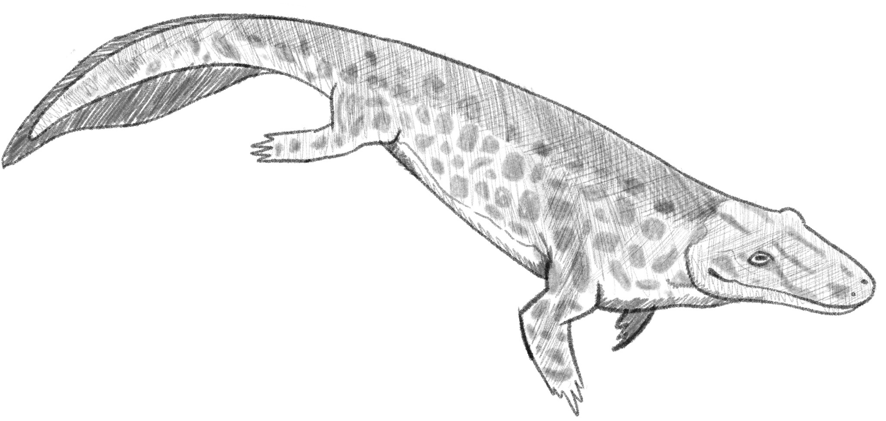
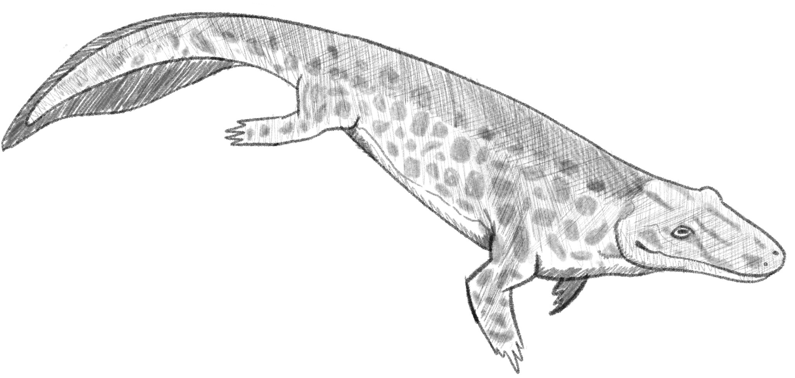

Eusthenopeteron existed in the Devonian period and was an early lobe-finned fish that is believed to be early in the line of evolution towards Tetrapods. It’s fossils are known to have been found in Canada, Quebec, and Miguasha. This carnivorous fish had powerful fins, and it was once speculated that they used these muscular fins to crawl out of the water onto land, however modern science suggests that these fish did in fact stay in the water. That said, these fins likely featured parts which would lead to the evolution of functional legs. Eusthenopteron also did have some features which were present in terrestrial amphbians down the line, such as folded enamel on their teeth, internal nostrils, and clear upper and lower portions of their fins.